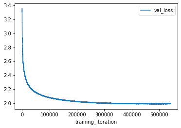
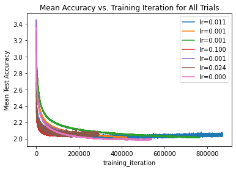

# !pip install ray[tune]Wavenet Hyperparameter Tuning
# !pip install optunaimport numpy as np
import torch
import random
import os
import torch.nn as nn
import torch.nn.functional as F
from torch import optim
import ray
from ray import tune
from ray.tune import CLIReporter, JupyterNotebookReporter
from ray.tune.schedulers import ASHAScheduler
from ray.tune.schedulers.pb2 import PB2
from ray.air import session
from ray.tune.suggest.optuna import OptunaSearch
from ray.air import Resultdevice = "cpu"
if torch.cuda.is_available():
device = "cuda:0"device'cuda:0'torch.manual_seed(42);random.seed(42)Setup Data Loader
words = open('names.txt', 'r').read().splitlines()random.shuffle(words)def build_dataset(words, block_size=8):
X, Y = [], []
random.seed(42)
random.shuffle(words)
chars = sorted(list(set(''.join(words))))
stoi = {s: i + 1 for i, s in enumerate(chars)}
stoi['.'] = 0
itos = {i: s for s, i in stoi.items()}
vocab_size = len(itos)
for w in words:
context = [0] * block_size
for ch in w + '.':
ix = stoi[ch]
X.append(context)
Y.append(ix)
context = context[1:] + [ix]
X = torch.tensor(X).to(device)
Y = torch.tensor(Y).to(device)
return X, Y
n1 = int(0.8 * len(words))
n2 = int(0.9 * len(words))
Xtr, Ytr = build_dataset(words[:n1])
Xdev, Ydev = build_dataset(words[n1:n2])
Xte, Yte = build_dataset(words[n2:])Xtr.shapetorch.Size([182625, 8])Create Model
# --- Tanh --- layer
class Tanh:
def __call__(self, x):
self.out = torch.tanh(x).to(device)
return self.out
def parameters(self):
return []
# --- Linear --- layer
class Linear:
def __init__(self, fan_in, fan_out, bias=True):
self.weight = (torch.randn((fan_in, fan_out)) / fan_in ** 0.5).to(device) # note: kaiming init
self.bias = torch.zeros(fan_out).to(device) if bias else None #
def __call__(self, x):
self.out = x @ self.weight
if self.bias is not None:
self.out += self.bias
return self.out
def parameters(self):
return [self.weight] + ([] if self.bias is None else [self.bias])
# --- Embedding --- layer
class Embedding:
def __init__(self, num_embeddings, embedding_dim):
self.weight = torch.randn((num_embeddings, embedding_dim)).to(device)
def __call__(self, IX):
self.out = self.weight[IX]
return self.out
def parameters(self):
return [self.weight]
# --- Sequential ----
class Sequential:
def __init__(self, layers):
self.layers = layers
def __call__(self, x):
B, T, C = x.shape
x = x.view(B, T//self.n, C*self.n)
if x.shape[1] == 1:
x = x.squeeze(1)
self.out = x
return self.out
def parameters(self):
# get parameters of all layers and stretch them out into one list
return [p for layer in self.layers for p in layer.parameters()]
# --- BatchNorm1d ---
class BatchNorm1d:
def __init__(self, dim, eps=1e-5, momentum=0.1):
self.eps = eps
self.momentum = momentum
self.training = True
# parameters (trained with backprop)
self.gamma = torch.ones(dim).to(device)
self.beta = torch.zeros(dim).to(device)
# buffers (trained with a running `momentum update`)
self.running_mean = torch.zeros(dim).to(device)
self.running_var = torch.ones(dim).to(device)
def __call__(self, x):
# calculate the forward pass
if self.training:
if x.ndim == 2: dim = 0
elif x.ndim == 3: dim = (0, 1)
xmean = x.mean(dim, keepdim=True)
xvar = x.var(dim, keepdim=True)
else:
# print('In batchnorm call')
xmean = self.running_mean
xvar = self.running_var
xhat = (x - xmean) / torch.sqrt(xvar + self.eps)
self.out = self.gamma * xhat + self.beta
# update the buffers
if self.training:
with torch.no_grad():
self.running_mean = (1 - self.momentum) * self.running_mean + self.momentum * xmean
self.running_var = (1 - self.momentum) * self.running_var + self.momentum * xvar
return self.out
def parameters(self):
return [self.gamma, self.beta]
# --- Flatten Consecutive ---
class FlattenConsecutive:
def __init__(self, n):
self.n = n
def __call__(self, x):
for layer in self.layers:
x = layer(x)
self.out = x
return self.out
def parameters(self):
# get parameters of all layers and stretch them out into one list
return [p for layer in self.layers for p in layer.parameters()]def build_model(n_embd, # the dimensionality of the character embedding vectors
n_hidden, # the number of neurons in the hidden layer of the MLP
last_layer_factor = 0.1 # the factor by to reduce the weights of the last layer
):
vocab_size = 27
model = Sequential([
Embedding(vocab_size, n_embd),
FlattenConsecutive(2), Linear(n_embd*2, n_hidden, bias=False), BatchNorm1d(n_hidden), Tanh(),
FlattenConsecutive(2), Linear(n_hidden*2, n_hidden, bias=False), BatchNorm1d(n_hidden), Tanh(),
FlattenConsecutive(2), Linear(n_hidden*2, n_hidden, bias=False), BatchNorm1d(n_hidden), Tanh(),
Linear(n_hidden, vocab_size),
])
# parameter init
with torch.no_grad(): model.layers[-1].weight *= last_layer_factor
parameters = model.parameters()
print("No of parameters ", sum(p.nelement() for p in parameters))
for p in parameters: p.requires_grad = True
return model76579model = build_model(24, 128)ix = torch.randint(0, Xtr.shape[0], (4,))
Xb, Yb = Xtr[ix], Ytr[ix]
logits = model(Xb)
print(Xb.shape)
Xbtorch.Size([4, 8])tensor([[ 0, 0, 0, 0, 0, 0, 0, 0],
[ 0, 0, 0, 0, 0, 0, 0, 6],
[ 0, 0, 0, 0, 0, 0, 0, 12],
[ 0, 0, 0, 2, 18, 9, 5, 12]])logitstensor([[ 0.0273, -0.0539, 0.0103, 0.0468, 0.0906, -0.0791, 0.0134, -0.0599,
-0.0407, -0.0617, 0.0134, -0.0230, -0.0095, 0.0769, 0.0231, 0.0755,
-0.0331, -0.0292, 0.0256, -0.1219, 0.0147, -0.0233, 0.0642, -0.0846,
-0.1325, 0.0057, 0.1157],
[ 0.0004, 0.0353, -0.0831, 0.0284, -0.0333, 0.0517, -0.0613, -0.0264,
0.0924, -0.0422, -0.0844, -0.0041, 0.0009, 0.0050, 0.0096, 0.0046,
0.0754, -0.0220, -0.0776, 0.0863, -0.0258, 0.0097, 0.1024, 0.0146,
0.1084, -0.0321, -0.0900],
[-0.0469, 0.0274, 0.0240, 0.0247, -0.0269, -0.0069, 0.1197, -0.0066,
-0.1216, 0.0030, -0.0689, -0.0530, 0.0465, -0.0710, -0.0207, -0.0524,
-0.0485, 0.0697, 0.0468, 0.0067, -0.0114, 0.0317, -0.0701, 0.0484,
0.1649, 0.0206, -0.0751],
[ 0.0238, -0.0383, -0.0129, -0.1187, -0.0069, -0.0030, -0.0763, 0.0728,
0.0896, 0.1063, 0.1267, 0.0320, -0.0092, -0.0483, -0.0477, -0.0461,
0.0270, 0.0346, 0.0168, 0.0283, 0.0219, -0.0034, -0.1050, 0.0165,
-0.1496, -0.0124, 0.0358]], device='cuda:0', grad_fn=<AddBackward0>)for i, ix in enumerate(batch(range(10))):
print(i, ix)0 range(0, 1)
1 range(1, 2)
2 range(2, 3)
3 range(3, 4)
4 range(4, 5)
5 range(5, 6)
6 range(6, 7)
7 range(7, 8)
8 range(8, 9)
9 range(9, 10)def batch(iterable, n=1):
l = len(iterable)
for ndx in range(0, l, n):
yield iterable[ndx:min(ndx + n, l)]for i, ix in enumerate(batch(range(10))):
print(i, ix)0 range(0, 1)
1 range(1, 2)
2 range(2, 3)
3 range(3, 4)
4 range(4, 5)
5 range(5, 6)
6 range(6, 7)
7 range(7, 8)
8 range(8, 9)
9 range(9, 10)# same optimization as last time
def train_no_tune(config, checkpoint_dir=None):
n_embd = config['n_embd']
n_hidden = config['n_hidden']
last_layer_factor = config['last_layer_factor']
max_steps = config['max_steps']
lr = config['lr']
batch_size = config['batch_size']
model = build_model(n_embd, n_hidden, last_layer_factor)
train_loss = F.cross_entropy(model(Xtr), Ytr)
print('Initial loss ', train_loss)
lossi = []
for i in range(max_steps):
running_loss = 0.0
epoch_steps = 0
# minibatch construct
ix = torch.randint(0, Xtr.shape[0], (batch_size,))
Xb, Yb = Xtr[ix], Ytr[ix]
# forward pass
logits = model(Xb)
loss = F.cross_entropy(logits, Yb)
# backward pass
for p in model.parameters():
p.grad = None
loss.backward()
# update: simple SGD
# lr = 0.1 if i < 150_000 else 0.01 # step learning rate decay
for p in model.parameters():
p.data += -lr * p.grad
# track stats
if i % 10_000 == 0:
print(f'{i:7d}/{max_steps:7d}: {loss.item():.4f}')
lossi.append(loss.log10().item())
# print(model)
return model
# print(train_loss.item(), val_loss.item())config = {
"n_embd": 24,
"n_hidden": 128,
"lr": 0.1,
"last_layer_factor": 0.1,
"batch_size": 32,
"max_steps": 150_000
}m = train_no_tune(config)ix = torch.randint(0, Xtr.shape[0], (4,))
Xb, Yb = Xtr[ix], Ytr[ix]
logits = m(Xb)
logitstensor([[ 7.3465, 3.0281, -0.8438, -0.6315, 0.1254, 2.3173, -5.4998, -3.1930,
1.5278, 1.3920, -0.8801, 0.2029, 0.6476, 1.1801, 3.3868, -0.4111,
-3.7620, -2.9908, 2.5343, 2.5573, -1.7074, 1.2317, -2.6614, -0.9130,
-1.6869, -1.5149, -0.9145],
[ 1.1573, 6.1267, -1.6542, -0.7126, -0.0082, 7.1435, -3.1067, -2.7086,
-0.5152, 5.9013, -1.5665, -2.7343, -0.8459, -2.8573, 0.9811, 5.7301,
-2.6570, -4.4699, 2.2010, -1.5982, -1.9610, 2.9759, 0.5002, -2.5367,
-3.4369, 5.2291, -4.5067],
[ 7.1585, 2.8464, 0.2289, -0.9455, 1.5724, 0.8947, -1.6819, 8.0458,
-3.1600, -1.8369, -0.4268, 0.1184, -0.3447, -0.5721, 2.6477, 0.2432,
-2.7675, -2.0082, 1.5645, 1.6701, -0.3294, -2.4148, -3.6991, -3.9939,
-2.7473, 0.7778, -1.0990],
[-0.6448, 5.7704, -0.8307, 0.5714, -1.6713, 5.6905, -2.8324, -4.6171,
1.4003, 7.0470, -1.9388, -1.7307, -1.1796, -0.9947, -1.5239, 2.1725,
-1.7857, -2.5253, 1.9881, 1.3517, -0.3367, -1.3917, -1.4497, -2.4642,
-1.0517, 4.1390, -1.2129]], device='cuda:0', grad_fn=<AddBackward0>)for layer in m.layers: layer.training = False
train_loss = F.cross_entropy(m(Xtr), Ytr).item()
val_loss = F.cross_entropy(m(Xdev), Ydev).item()
train_loss, val_loss(1.858979344367981, 2.039809226989746)Tuning
def train(config):
n_embd = config['n_embd']
n_hidden = config['n_hidden']
last_layer_factor = config['last_layer_factor']
max_steps = config['max_steps']
lr = config['lr']
batch_size = config['batch_size']
model = build_model(n_embd, n_hidden, last_layer_factor)
train_loss = F.cross_entropy(model(Xtr), Ytr)
print('Initial loss ', train_loss)
lossi = []
# max_steps = 100_00_000
for i in range(max_steps):
running_loss = 0.0
epoch_steps = 0
# minibatch construct
ix = torch.randint(0, Xtr.shape[0], (batch_size,))
Xb, Yb = Xtr[ix], Ytr[ix]
# forward pass
logits = model(Xb)
loss = F.cross_entropy(logits, Yb)
# backward pass
for p in model.parameters():
p.grad = None
loss.backward()
# update: simple SGD
for p in model.parameters():
p.data += -lr * p.grad
# track stats
# if i % 10_000 == 0: # print every once in a while
# # print(f'{i:7d}/{max_steps:7d}: {loss.item():.4f}')
for layer in model.layers: layer.training = False
train_loss = F.cross_entropy(model(Xtr), Ytr)
val_loss = F.cross_entropy(model(Xdev), Ydev)
session.report({'training_iteration':i, 'train_loss':train_loss.item(), 'val_loss':val_loss.item()})
for layer in model.layers: layer.training = True
lossi.append(loss.log10().item())
print('Train Loss ', F.cross_entropy(model(Xtr), Ytr).item())
print('Val Loss ', F.cross_entropy(model(Xdev), Ydev).item()) 0/ 300000: 3.2818
10000/ 300000: 2.3348
20000/ 300000: 2.0034
30000/ 300000: 1.9822
40000/ 300000: 1.5388
50000/ 300000: 1.9057
60000/ 300000: 1.6040
70000/ 300000: 2.0101
80000/ 300000: 2.2422
90000/ 300000: 1.6573
100000/ 300000: 1.7261
110000/ 300000: 1.8587
120000/ 300000: 1.5202
130000/ 300000: 2.0675
140000/ 300000: 1.9777
150000/ 300000: 2.0351
160000/ 300000: 1.6458
170000/ 300000: 1.8868
180000/ 300000: 1.7516
190000/ 300000: 1.6009
200000/ 300000: 1.3999
210000/ 300000: 1.7495
220000/ 300000: 1.6129
230000/ 300000: 1.7232
240000/ 300000: 2.2450
250000/ 300000: 2.2155
260000/ 300000: 1.5074
270000/ 300000: 1.6431
280000/ 300000: 1.7525
290000/ 300000: 1.8047def tuning():
search_space = {
"n_embd": tune.randint(4, 65),
"n_hidden": tune.randint(100, 500),
"lr": tune.loguniform(1e-4, 1e-1),
"last_layer_factor": tune.uniform(0.1, 1.01),
"batch_size": tune.choice([16, 32, 64]),
"max_steps": tune.randint(100_000, 10_00_000)
}
initial_params = [{
"n_embd": 24,
"n_hidden": 128,
"lr": 0.1,
"last_layer_factor": 0.1,
"batch_size": 32,
"max_steps": 150_000
}]
searcher = OptunaSearch(points_to_evaluate=initial_params)
trainable_with_cpu_gpu = tune.with_resources(train, {"cpu": 30, "gpu": 1})
tuner = tune.Tuner(
trainable_with_cpu_gpu,
tune_config=tune.TuneConfig(
metric="val_loss",
mode="min",
search_alg=searcher,
num_samples=7,
),
param_space=search_space,
)
results = tuner.fit()
print("Best hyperparameters found were: ", results.get_best_result().config)ray.shutdown();
ray.init()2023-03-19 17:02:02,578 INFO worker.py:1553 -- Started a local Ray instance.Ray
| Python version: | 3.8.10 |
| Ray version: | 2.3.0 |
tuning()/home/ubuntu/.local/lib/python3.8/site-packages/ray/tune/search/optuna/optuna_search.py:683: FutureWarning: IntUniformDistribution has been deprecated in v3.0.0. This feature will be removed in v6.0.0. See https://github.com/optuna/optuna/releases/tag/v3.0.0. Use :class:`~optuna.distributions.IntDistribution` instead.
return ot.distributions.IntUniformDistribution(
/home/ubuntu/.local/lib/python3.8/site-packages/ray/tune/search/optuna/optuna_search.py:662: FutureWarning: LogUniformDistribution has been deprecated in v3.0.0. This feature will be removed in v6.0.0. See https://github.com/optuna/optuna/releases/tag/v3.0.0. Use :class:`~optuna.distributions.FloatDistribution` instead.
return ot.distributions.LogUniformDistribution(
/home/ubuntu/.local/lib/python3.8/site-packages/ray/tune/search/optuna/optuna_search.py:671: FutureWarning: UniformDistribution has been deprecated in v3.0.0. This feature will be removed in v6.0.0. See https://github.com/optuna/optuna/releases/tag/v3.0.0. Use :class:`~optuna.distributions.FloatDistribution` instead.
return ot.distributions.UniformDistribution(
[I 2023-03-19 17:02:06,605] A new study created in memory with name: optuna
/home/ubuntu/.local/lib/python3.8/site-packages/optuna/distributions.py:799: FutureWarning: IntUniformDistribution(high=64, low=4, step=1) is deprecated and internally converted to IntDistribution(high=64, log=False, low=4, step=1). See https://github.com/optuna/optuna/issues/2941.
warnings.warn(message, FutureWarning)
/home/ubuntu/.local/lib/python3.8/site-packages/optuna/distributions.py:799: FutureWarning: IntUniformDistribution(high=499, low=100, step=1) is deprecated and internally converted to IntDistribution(high=499, log=False, low=100, step=1). See https://github.com/optuna/optuna/issues/2941.
warnings.warn(message, FutureWarning)
/home/ubuntu/.local/lib/python3.8/site-packages/optuna/distributions.py:799: FutureWarning: LogUniformDistribution(high=0.1, low=0.0001) is deprecated and internally converted to FloatDistribution(high=0.1, log=True, low=0.0001, step=None). See https://github.com/optuna/optuna/issues/2941.
warnings.warn(message, FutureWarning)
/home/ubuntu/.local/lib/python3.8/site-packages/optuna/distributions.py:799: FutureWarning: UniformDistribution(high=1.01, low=0.1) is deprecated and internally converted to FloatDistribution(high=1.01, log=False, low=0.1, step=None). See https://github.com/optuna/optuna/issues/2941.
warnings.warn(message, FutureWarning)
/home/ubuntu/.local/lib/python3.8/site-packages/optuna/distributions.py:799: FutureWarning: IntUniformDistribution(high=999999, low=100000, step=1) is deprecated and internally converted to IntDistribution(high=999999, log=False, low=100000, step=1). See https://github.com/optuna/optuna/issues/2941.
warnings.warn(message, FutureWarning)
2023-03-19 17:02:06,901 WARNING worker.py:1866 -- Warning: The actor ImplicitFunc is very large (14 MiB). Check that its definition is not implicitly capturing a large array or other object in scope. Tip: use ray.put() to put large objects in the Ray object store.
(pid=88428) /home/ubuntu/.local/lib/python3.8/site-packages/pandas/core/computation/expressions.py:20: UserWarning: Pandas requires version '2.7.3' or newer of 'numexpr' (version '2.7.1' currently installed).
(pid=88428) from pandas.core.computation.check import NUMEXPR_INSTALLEDTune Status
| Current time: | 2023-03-19 23:14:45 |
| Running for: | 06:12:38.49 |
| Memory: | 9.4/196.6 GiB |
System Info
Using FIFO scheduling algorithm.Resources requested: 30.0/30 CPUs, 1.0/1 GPUs, 0.0/125.77 GiB heap, 0.0/57.89 GiB objects (0.0/1.0 accelerator_type:A100)
Trial Status
| Trial name | status | loc | batch_size | last_layer_factor | lr | max_steps | n_embd | n_hidden | iter | total time (s) | train_loss | val_loss |
|---|---|---|---|---|---|---|---|---|---|---|---|---|
| train_f6250653 | RUNNING | 10.19.31.32:88428 | 64 | 0.99565 | 0.000439031 | 540060 | 24 | 456 | 302615 | 19429.5 | 1.85993 | 2.00036 |
| train_abc822a6 | PENDING | 16 | 0.127438 | 0.000668113 | 762048 | 30 | 168 | |||||
| train_e8e76444 | TERMINATED | 10.19.31.32:88428 | 32 | 0.1 | 0.1 | 150000 | 24 | 128 | 149999 | 2925.94 | 1.88007 | 2.06663 |
(train pid=88428) No of parameters 76579
(train pid=88428) Initial loss tensor(3.2965, device='cuda:0', grad_fn=<NllLossBackward0>)
(train pid=88428) Train Loss 1.873051643371582
(train pid=88428) Val Loss 2.0602710247039795
(train pid=88428) No of parameters 869355
(train pid=88428) Initial loss
(train pid=88428) tensor(3.4301, device='cuda:0', grad_fn=<NllLossBackward0>)Trial Progress
| Trial name | date | done | episodes_total | experiment_id | hostname | iterations_since_restore | node_ip | pid | time_since_restore | time_this_iter_s | time_total_s | timestamp | timesteps_since_restore | timesteps_total | train_loss | training_iteration | trial_id | val_loss | warmup_time |
|---|---|---|---|---|---|---|---|---|---|---|---|---|---|---|---|---|---|---|---|
| train_e8e76444 | 2023-03-19_17-50-55 | True | 352e72ef24b0485790725bb268154829 | 129-146-49-170 | 150000 | 10.19.31.32 | 88428 | 2925.94 | 0.0204446 | 2925.94 | 1679248255 | 0 | 1.88007 | 149999 | e8e76444 | 2.06663 | 0.00304294 | ||
| train_f6250653 | 2023-03-19_23-14-47 | False | 352e72ef24b0485790725bb268154829 | 129-146-49-170 | 302648 | 10.19.31.32 | 88428 | 19431.6 | 0.0662513 | 19431.6 | 1679267687 | 0 | 1.85784 | 302647 | f6250653 | 1.99851 | 0.00304294 |
Analyze the Ray Tune trials
All the trials’ information did not show up above therefore doing the analysis in the folowing cells
experiment_path = f"ray_results/train_2023-03-19_17-02-06"
print(f"Loading results from {experiment_path}...")Loading results from ray_results/train_2023-03-19_17-02-06...restored_tuner = tune.Tuner.restore(experiment_path)
result_grid = restored_tuner.get_results()/home/ubuntu/.local/lib/python3.8/site-packages/ray/tune/tuner.py:230: UserWarning: Passing in the experiment's `trainable` will be a required argument to `Tuner.restore` starting from version 2.5. Please specify the trainable to avoid this warning.
warnings.warn(warning_message)
2023-03-21 14:13:11,149 INFO experiment_analysis.py:789 -- No `self.trials`. Drawing logdirs from checkpoint file. This may result in some information that is out of sync, as checkpointing is periodic.results_df = result_grid.get_dataframe()
results_df[["training_iteration", "val_loss"]]| training_iteration | val_loss | |
|---|---|---|
| 0 | 870783 | 2.044881 |
| 1 | 423444 | 2.018260 |
| 2 | 762047 | 2.015049 |
| 3 | 149999 | 2.066634 |
| 4 | 199144 | 2.051399 |
| 5 | 289118 | 2.046853 |
| 6 | 540059 | 1.989679 |
best_result: Result = result_grid.get_best_result()best_result.config{'n_embd': 24,
'n_hidden': 456,
'lr': 0.0004390312584437158,
'last_layer_factor': 0.9956496873025195,
'batch_size': 64,
'max_steps': 540060}best_result.checkpointtrain 1.7052044868469238
val 2.2605273723602295best_result.metrics{'training_iteration': 540059,
'train_loss': 1.7585725784301758,
'val_loss': 1.9896790981292725,
'time_this_iter_s': 0.06922125816345215,
'done': True,
'timesteps_total': None,
'episodes_total': None,
'trial_id': 'f6250653',
'experiment_id': '352e72ef24b0485790725bb268154829',
'date': '2023-03-20_03-45-17',
'timestamp': 1679283917,
'time_total_s': 35661.531294584274,
'pid': 88428,
'hostname': '129-146-49-170',
'node_ip': '10.19.31.32',
'config': {'n_embd': 24,
'n_hidden': 456,
'lr': 0.0004390312584437158,
'last_layer_factor': 0.9956496873025195,
'batch_size': 64,
'max_steps': 540060},
'time_since_restore': 35661.531294584274,
'timesteps_since_restore': 0,
'iterations_since_restore': 540060,
'warmup_time': 0.003042936325073242,
'experiment_tag': '2_batch_size=64,last_layer_factor=0.9956,lr=0.0004,max_steps=540060,n_embd=24,n_hidden=456'}best_result.metrics_dataframe.plot("training_iteration", "val_loss")<AxesSubplot:xlabel='training_iteration'>
ax = None
for result in result_grid:
label = f"lr={result.config['lr']:.3f}"
if ax is None:
ax = result.metrics_dataframe.plot("training_iteration", "val_loss", label=label)
else:
result.metrics_dataframe.plot("training_iteration", "val_loss", ax=ax, label=label)
ax.set_title("Mean Accuracy vs. Training Iteration for All Trials")
ax.set_ylabel("Mean Test Accuracy")Text(0, 0.5, 'Mean Test Accuracy')
Train and Test with Best Config
best_result.metrics{'training_iteration': 540059,
'train_loss': 1.7585725784301758,
'val_loss': 1.9896790981292725,
'time_this_iter_s': 0.06922125816345215,
'done': True,
'timesteps_total': None,
'episodes_total': None,
'trial_id': 'f6250653',
'experiment_id': '352e72ef24b0485790725bb268154829',
'date': '2023-03-20_03-45-17',
'timestamp': 1679283917,
'time_total_s': 35661.531294584274,
'pid': 88428,
'hostname': '129-146-49-170',
'node_ip': '10.19.31.32',
'config': {'n_embd': 24,
'n_hidden': 456,
'lr': 0.0004390312584437158,
'last_layer_factor': 0.9956496873025195,
'batch_size': 64,
'max_steps': 540060},
'time_since_restore': 35661.531294584274,
'timesteps_since_restore': 0,
'iterations_since_restore': 540060,
'warmup_time': 0.003042936325073242,
'experiment_tag': '2_batch_size=64,last_layer_factor=0.9956,lr=0.0004,max_steps=540060,n_embd=24,n_hidden=456'}config = {'n_embd': 24,
'n_hidden': 456,
'lr': 0.0004390312584437158,
'last_layer_factor': 0.9956496873025195,
'batch_size': 64,
'max_steps': 540060}model = train_no_tune(config)No of parameters 869355
Initial loss tensor(3.4630, device='cuda:0', grad_fn=<NllLossBackward>)
0/ 540060: 3.4067
10000/ 540060: 2.4061
20000/ 540060: 2.1215
30000/ 540060: 2.2546
40000/ 540060: 2.2071
50000/ 540060: 2.1789
60000/ 540060: 2.5076
70000/ 540060: 2.0653
80000/ 540060: 1.9867
90000/ 540060: 1.9995
100000/ 540060: 2.2169
110000/ 540060: 2.2312
120000/ 540060: 2.0663
130000/ 540060: 1.8910
140000/ 540060: 1.9463
150000/ 540060: 2.0409
160000/ 540060: 1.8872
170000/ 540060: 2.1610
180000/ 540060: 1.8664
190000/ 540060: 2.0235
200000/ 540060: 1.8428
210000/ 540060: 1.8524
220000/ 540060: 1.9312
230000/ 540060: 1.8659
240000/ 540060: 1.7783
250000/ 540060: 1.8855
260000/ 540060: 2.0965
270000/ 540060: 1.8449
280000/ 540060: 2.2505
290000/ 540060: 2.0819
300000/ 540060: 1.9650
310000/ 540060: 1.8367
320000/ 540060: 1.9641
330000/ 540060: 2.1167
340000/ 540060: 1.8066
350000/ 540060: 1.8251
360000/ 540060: 1.5952
370000/ 540060: 2.0327
380000/ 540060: 1.8862
390000/ 540060: 1.8184
400000/ 540060: 1.8827
410000/ 540060: 1.8935
420000/ 540060: 2.1733
430000/ 540060: 1.8394
440000/ 540060: 2.0016
450000/ 540060: 2.0970
460000/ 540060: 1.6659
470000/ 540060: 1.5410
480000/ 540060: 1.9260
490000/ 540060: 1.6596
500000/ 540060: 1.7006
510000/ 540060: 1.7158
520000/ 540060: 1.8447
530000/ 540060: 1.9106
540000/ 540060: 1.7005for layer in model.layers: layer.training = False
with torch.no_grad():
train_loss = F.cross_entropy(model(Xtr), Ytr)
val_loss = F.cross_entropy(model(Xdev), Ydev)
test_loss = F.cross_entropy(model(Xte), Yte)
print('Train loss ', train_loss)
print('Val loss ', val_loss)
print('Test loss ', test_loss)Train loss tensor(1.7622, device='cuda:0')
Val loss tensor(1.9855, device='cuda:0')
Test loss tensor(1.9815, device='cuda:0')